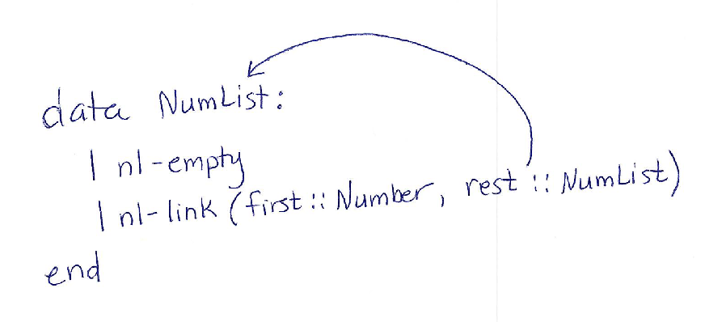

5.3 Recursive Data
In Telling
Apart Variants of Conditional Data, we used
switch
to distinguish between different forms of conditional data. We had used
switch
earlier, specifically to distinguish between empty and non-empty lists
in Processing Lists. This suggests
that lists are also a form of conditional data, just one that is built
into Jayret. Indeed, this is the case.
To understand lists as conditional data, let’s create a data
definition for a new type
NumList
which contains a list of numbers (this differs from built-in lists,
which work with any type of element). To avoid conflicts with Jayret’s
built-in
Empty
value and
Link
constructor, we’ll have
NumList
use
nl-empty
as its empty value and
nl-link
as the operator that builds new lists. Here’s a partial definition:
data NumList {
Nl-empty;
Nl-link(_________);
}Do Now!
Fill in the blank in the
nl-linkcondition with the corresponding field(s) and corresponding types. The blank could contain anywhere from 0 through multiple fields.
From working with lists earlier, hopefully you remembered that list constructors take two inputs: the first element of the list and a list to build on (the rest of the list). That suggests that we need two fields here:
data NumList {
Nl-empty;
Nl-link(_________ first, _________ rest);
}Do Now!
Fill in the types for
firstandrestif you haven’t already.
Since we’re making a list of numbers, the
first
field should contain type
Number.
What about the
rest
field? It needs to be a list of numbers, so its type should be
NumList.
data NumList {
Nl-empty;
Nl-link(int first, NumList rest);
}Notice something interesting (and new) here: the type of the
rest
field is the same type
(NumList)
as the conditional data that we are defining. We can, quite literally,
draw the arrows that show the self-referential part of the
definition:

Does that actually work? Yes. Think about how we might build up a
list with the numbers 2, 7, and 3 (in that order). We start with
nl-empty,
which is a valid
NumList.
We then use
nl-link
to add the numbers onto that list, as follows:
nl-empty;
nl-link(3, nl-empty);
nl-link(7, nl-link(3, nl-empty));
nl-link(2, nl-link(7, nl-link(3, nl-empty)));In each case, the
rest
argument is itself a valid
NumList.
While defining data in terms of itself might seem problematic, it works
fine because in order to build actual data, we had to start with the
nl-empty
condition, which does not refer to
NumList.
Data definitions that build on fields of the same type are called
recursive data. Recursive data definitions are powerful because they
permit us to create data that are unbounded or arbitrarily-sized. Given
a
NumList,
there is an easy way to make a new, larger one: just use
nl-link.
So, we need to consider larger lists:
nl-link(1,
nl-link(2,
nl-link(3,
nl-link(4,
nl-link(5,
nl-link(6,
nl-link(7,
nl-link(8,
nl-empty))))))));5.3.1 Functions to Process Recursive Data
Let’s try to write a function
contains-3,
which returns
true
if the
NumList
contains the value
3,
and
false
otherwise.
First, our header:
boolean contains-3(NumList nl) {
// Produces true if the list contains 3, false otherwise
}Next, some tests:
boolean contains-3(NumList nl) {
// Produces true if the list contains 3, false otherwise
} where {
}As we did in Processing Fields
of Variants, we will use
switch
to distinguish the variants. In addition, since we are going to have to
use the fields of
nl-link
to compute a result in that case, we will list those in the initial code
outline:
boolean contains-3(NumList nl) {
// Produces true if the list contains 3, false otherwise
return switch (nl) {
case Nl-empty: yield ...;
case Nl-link(first, rest): yield block {
...;
first;
...;
...;
rest;
return ...;
};
}
}Following our examples, the answer must be false in the
nl-empty
case. In the
nl-link
case, if the
first
element is
3,
we’ve successfully answered the question. That only leaves the case
where the argument is an
nl-link
and the first element does not equal
3:
boolean contains-3(NumList nl) {
return switch (nl) {
case Nl-empty: yield false;
case Nl-link(first, rest): yield if (first == 3) {
return true;
} else {
};
}
}
// handle rest hereSince we know
rest
is a
NumList
(based on the data definition), we can use a
switch
expression to work with it. This is sort of like filling in a part of
the template again:
boolean contains-3(NumList nl) {
return switch (nl) {
case Nl-empty: yield false;
case Nl-link(first, rest): yield if (first == 3) {
return true;
} else {
return switch (rest) {
case Nl-empty: yield ...;
case Nl-link(first-of-rest, rest-of-rest): yield block {
...;
first-of-rest;
...;
...;
rest-of-rest;
return ...;
};
}
};
}
}If the
rest
was empty, then we haven’t found
3
(just like when we checked the original argument,
nl).
If the
rest
was a
nl-link,
then we need to check if the first thing in the rest of the list is
3
or not:
boolean contains-3(NumList nl) {
return switch (nl) {
case Nl-empty: yield false;
case Nl-link(first, rest): yield if (first == 3) {
return true;
} else {
return switch (rest) {
case Nl-empty: yield false;
case Nl-link(first-of-rest, rest-of-rest): yield if (first-of-rest == 3) {
return true;
} else {
};
}
};
}
}
// fill in here ...Since
rest-of-rest
is a
NumList,
we can fill in a
switch
for it again:
boolean contains-3(NumList nl) {
return switch (nl) {
case Nl-empty: yield false;
case Nl-link(first, rest): yield if (first == 3) {
return true;
} else {
return switch (rest) {
case Nl-empty: yield false;
case Nl-link(first-of-rest, rest-of-rest): yield if (first-of-rest == 3) {
return true;
} else {
return switch (rest-of-rest) {
case Nl-empty: yield ...;
case Nl-link(first-of-rest-of-rest, rest-of-rest-of-rest): yield block {
...;
first-of-rest-of-rest;
...;
...;
rest-of-rest-of-rest;
return ...;
};
}
};
}
};
}
}See where this is going? Not anywhere good. We can copy this
switch
expression as many times as we want, but we can never answer the
question for a list that is just one element longer than the number of
times we copy the code.
So what to do? We tried this approach of using another copy of
switch
based on the observation that
rest
is a
NumList,
and
switch
provides a meaningful way to break apart a
NumList;
in fact, it’s what the recipe seems to lead to naturally.
Let’s go back to the step where the problem began, after filling in
the template with the first check for
3:
boolean contains-3(NumList nl) {
return switch (nl) {
case Nl-empty: yield false;
case Nl-link(first, rest): yield if (first == 3) {
return true;
} else {
};
}
}
// what to do with rest?We need a way to compute whether or not the value
3
is contained in
rest.
Looking back at the data definition, we see that
rest
is a perfectly valid
NumList,
simply by the definition of
nl-link.
And we have a function (or, most of one) whose job is to figure out if a
NumList
contains
3
or not:
contains-3.
That ought to be something we can call with
rest
as an argument, and get back the value we want:
boolean contains-3(NumList nl) {
return switch (nl) {
case Nl-empty: yield false;
case Nl-link(first, rest): yield if (first == 3) {
return true;
} else {
return contains-3(rest);
};
}
}And lo and behold, all of the tests defined above pass. It’s useful to step through what’s happening when this function is called. Let’s look at an example:
contains-3(nl-link(1, nl-link(3, nl-empty)));First, we substitute the argument value in place of
nl
everywhere it appears; that’s just the usual rule for function
calls.
=> switch (nl-link(1, nl-link(3, nl-empty))) {
case Nl-empty: yield false;
case Nl-link(first, rest): yield
if (first == 3) { return true; }
else { return contains-3(rest); }
}Next, we find the case that matches the constructor
nl-link,
and substitute the corresponding pieces of the
nl-link
value for the
first
and
rest
identifiers.
=> if (1 == 3) { return true; }
else { return contains-3(nl-link(3, nl-empty)); }Since
1
isn’t
3,
the comparison evaluates to
false,
and this whole expression evaluates to the contents of the
else
branch.
=> if (false) { return true; }
else { return contains-3(nl-link(3, nl-empty)); }
=> contains-3(nl-link(3, nl-empty))This is another function call, so we substitute the value
nl-link(3, nl-empty),
which was the
rest
field of the original input, into the body of
contains-3
this time.
=> switch (nl-link(3, nl-empty)) {
case Nl-empty: yield false;
case Nl-link(first, rest): yield
if (first == 3) { return true; }
else { return contains-3(rest); }
}Again, we substitute into the
nl-link
branch.
=> if (3 == 3) { return true; }
else { return contains-3(nl-empty); }This time, since
3
is
3,
we take the first branch of the
if
expression, and the whole original call evaluates to
true.
=> if (true) { return true; }
else { return contains-3(nl-empty); }
=> trueAn interesting feature of this trace through the evaluation is that
we reached the expression
contains-3(nl-link(3, nl-empty)),
which is a normal call to
contains-3;
it could even be a test case on its own. The implementation works by
doing something (checking for equality with
3)
with the non-recursive parts of the datum, and combining that result
with the result of the same operation
(contains-3)
on the recursive part of the datum. This idea of doing recursion with
the same function on self-recursive parts of the datatype lets us extend
our template to handle recursive fields.
5.3.2 A Template for Processing Recursive Data
Stepping back, we have actually derived a new way to approach writing functions over recursive data. Back in Processing Lists, we had you write functions over lists by writing a sequence of related examples, using substitution across examples to derive a program that called the function on the rest of the list. Here, we are deriving that structure from the shape of the data itself.
In particular, we can develop a function over recursive data by
breaking a datum into its variants (using
switch),
pulling out the fields of each variant (by listing the field names),
then calling the function itself on any recursive fields (fields of the
same type). For
NumList,
these steps yield the following code outline:
/* fun num-list-fun(nl :: NumList) -> ???:
cases (NumList) nl:
| nl-empty => ...
| nl-link(first, rest) =>
... first ...
... num-list-fun(rest) ...
end
end */
Here, we are using a generic function name,
num-list-fun,
to illustrate that this is the outline for any function that processes a
NumList.
We refer to this code outline as a template. Every
data
definition has a corresponding template which captures how to break a
value of that definition into cases, pull out the fields, and use the
same function to process any recursive fields.
Strategy
Given a recursive data definition, use the following steps to create the (reusable) template for that definition:
Create a function header (using a general-purpose placeholder name if you aren’t yet writing a specific function).
Use
switchto break the recursive-data input into its variants.In each case, list each of its fields in the answer portion of the case.
Call the function itself on any recursive fields.
The power of the template lies in its universality. If you are asked
to write a specific function (such as
contains-3)
over recursive data
(NumList),
you can reproduce or copy (if you already wrote it down) the template,
replace the generic function name in the template with the one for your
specific function, then fill in the ellipses to finish the function.
When you see a recursive data definition (of which there will be many when programming in Jayret), you should naturally start thinking about what the recursive calls will return and how to combine their results with the other, non-recursive pieces of the datatype.
You have now seen two approaches to writing functions on recursive data: working out a sequence of related examples and modifying the template. Both approaches get you to the same final function. The power of the template, however, is that it scales to more complicated data definitions (where writing examples by hand would prove tedious). We will see examples of this as our data get more complex in coming chapters.
5.3.3 The Design Recipe
We’ve showed you many techniques to use while designing programs, including developing examples, writing tests, and now writing and using data templates. Putting the pieces together yields a design recipe, adapted from that in How to Design Programs, that we can follow for designing recursive functions.
Strategy
Given a programming problem over recursive data:
Create a function header, including the function name and contract. The name will be necessary to make recursive calls, while the contract guides the design of the body.
Aided by the contract, which tells you what kind of data to consume and produce, write several illustrative examples of the function’s input and outputs, using concrete data. Include examples in which the input data of one extends the input data of another. This will later help you fill in the function.
The function’s contract tells you what kind of data you are processing. From the definition of the data, write out the template for it.
Adapt this template to the computation required by this specific problem. Use your examples to figure out how to fill in each case. You should have written an example for each case of data in the template. This is also where writing examples where input extended the other helps: the difference in output becomes the function body. See the several examples of this in Processing Lists.
Run your examples to make sure your function behaves as you expect.
Now start writing more fine-grained tests to confirm that you should be confident in your function. In particular, while the examples (which were written before you wrote the body of the function) focus on the expected “input-output” behavior, now that you have a concrete implementation, you should write tests that focus on its details.
Exercise
Use the design recipe to write a function
contains-nthat takes aNumListand aNumber, and returns whether that number is in theNumList.
Exercise
Use the design recipe to write a function
sumthat takes aNumList, and returns the sum of all the numbers in it. The sum of the empty list is0.
Exercise
Use the design recipe to write a function
remove-3that takes aNumList, and returns a newNumListwith any3’s removed. The remaining elements should all be in the list in the same order they were in the input.
Exercise
Write a data definition called
NumListListthat represents a list ofNumLists, and use the design recipe to write a functionsum-of-liststhat takes aNumListListand produces aNumListcontaining the sums of the sub-lists.
Exercise
Write a data definition and corresponding template for
StrList, which captures lists of strings.